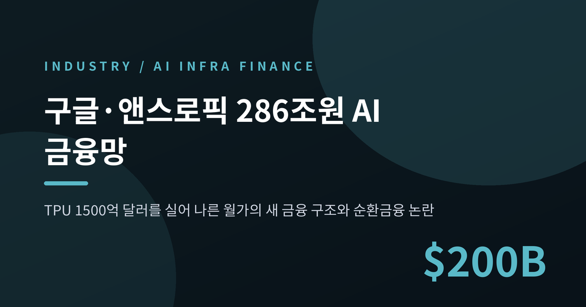
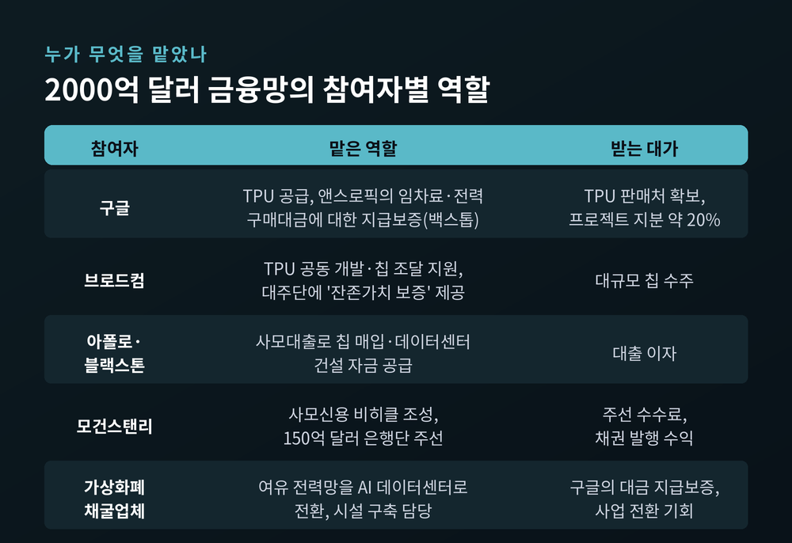
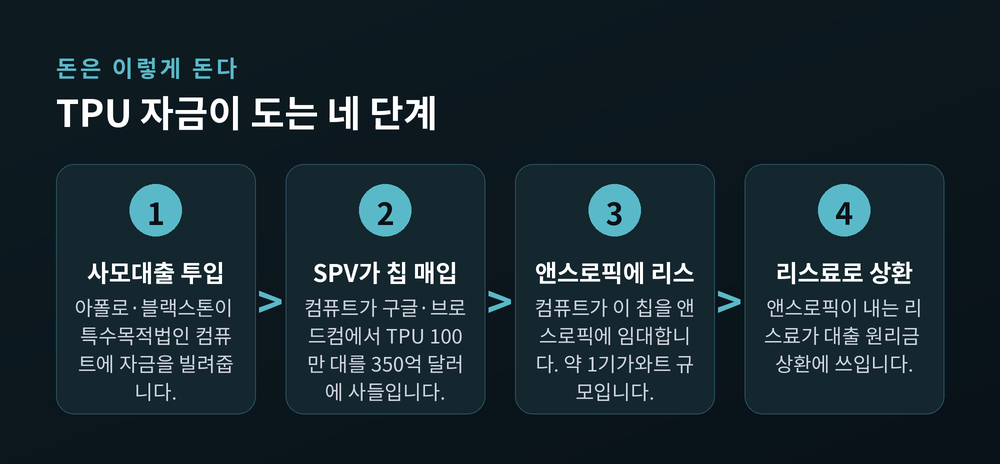
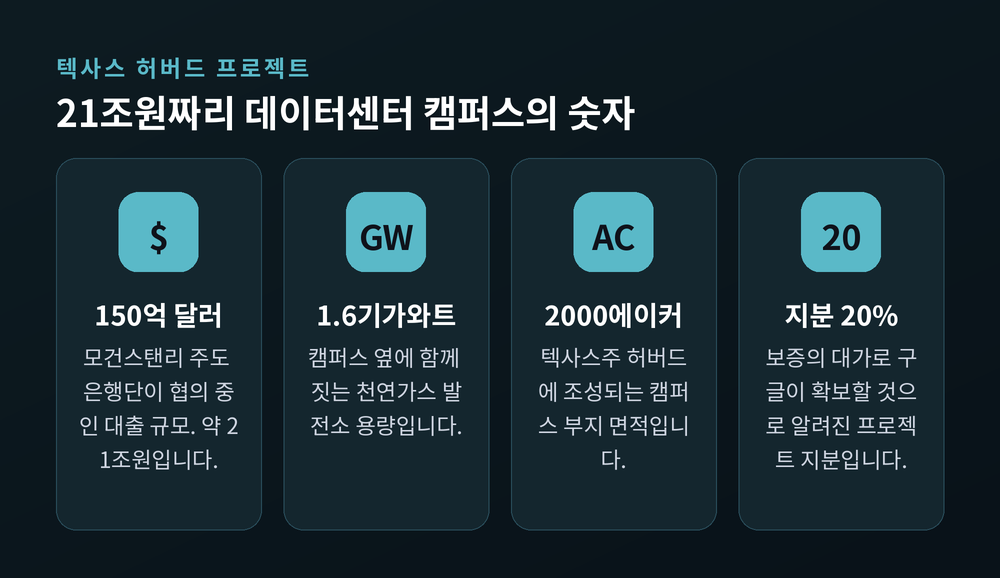
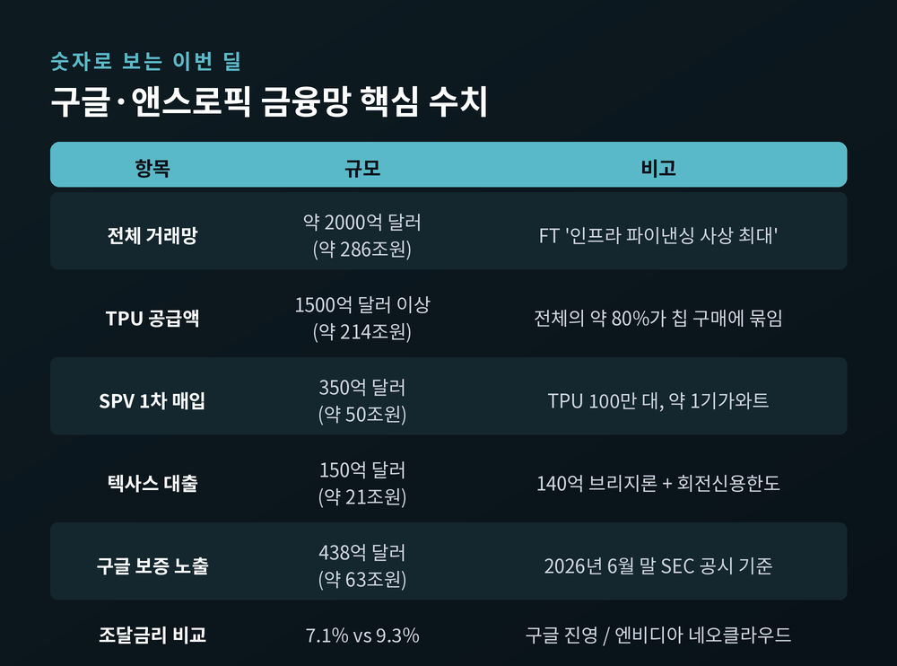
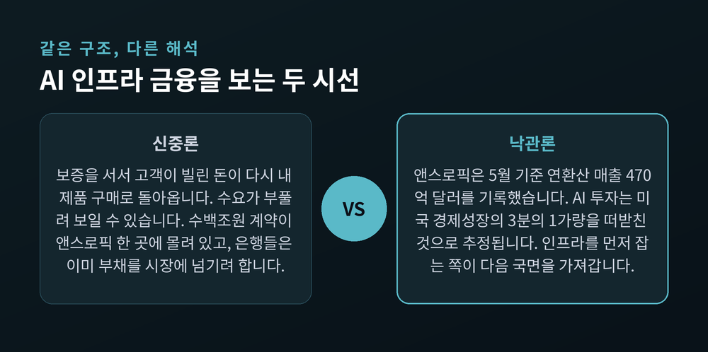

구글 앤스로픽 TPU 286조 금융망, AI 순환금융 논란이 커진 이유

이번 글에서는 구글이 앤스로픽에 AI 반도체를 공급하기 위해 월가와 함께 짠 2,000억 달러 규모 금융망을 정리해 보겠습니다. 칩 이야기가 아니라 돈의 흐름에 관한 이야기입니다. 왜 이 구조를 두고 'AI 순환금융'이라는 경고가 나오는지까지 짚어보려 합니다.
먼저 세 줄로 요약합니다.
- 구글이 앤스로픽에 TPU를 1,500억 달러 이상 공급하기 위해 총 2,000억 달러(약 286조원) 규모의 인프라 금융망을 만들었습니다.
- 구글이 신용을 빌려주고, 사모대출이 돈을 대고, 특수목적법인이 칩을 사서 임대하는 구조입니다.
- 규모는 사상 최대지만, 계약 대부분이 앤스로픽 한 회사의 지급 능력에 걸려 있다는 점이 최대 약점으로 지목됩니다.
무슨 일이 있었나 — 사상 최대 인프라 금융망
파이낸셜타임스는 8월 4일 복수의 소식통을 인용해 구글이 구축한 금융망이 인프라 파이낸싱 분야에서 사상 최대 규모라고 보도했습니다.
출발점은 TPU입니다. 구글이 브로드컴과 2016년부터 함께 개발해 온 자체 AI 반도체입니다. 구글은 이 칩을 앤스로픽에 1,500억 달러(약 214조 4,000억원) 이상 공급하기로 했습니다.
문제는 앤스로픽이 그만한 돈을 스스로 조달할 처지가 아니라는 데 있었습니다. 매출은 빠르게 늘고 있지만 뚜렷한 신용등급이 없는 스타트업입니다. 은행이 담보로 잡을 만한 이력이 짧습니다.
그래서 구글은 칩만 파는 대신, 칩이 들어갈 데이터센터와 그 데이터센터를 지을 돈까지 통째로 설계했습니다. 칩 제조부터 데이터센터 건설, 발전소까지 아우르는 거래망의 총 규모가 약 2,000억 달러입니다. 이 가운데 약 80%가 TPU 구매에 묶여 있습니다.
참여자 명단이 이례적입니다. 구글, 브로드컴, 사모대출 운용사 아폴로와 블랙스톤, 모건스탠리, 그리고 다수의 가상화폐 채굴업체입니다.

돈은 어떻게 도는가 — SPV '컴퓨트'와 벤더 파이낸싱
핵심 장치는 '컴퓨트'라는 특수목적법인(SPV)입니다. 칩 조달 부담을 한 회사가 떠안지 않도록 별도 법인을 세운 것입니다.
컴퓨트는 지난 7월 구글과 브로드컴으로부터 TPU 100만 대 규모의 1차 물량을 350억 달러(약 50조원)에 사들였습니다. 전력으로 환산하면 약 1기가와트 규모입니다.
이 돈은 아폴로와 블랙스톤의 사모대출로 마련됐습니다. 브로드컴은 여기에 '잔존가치 보증'을 붙였습니다. 앤스로픽이 리스비를 못 내고, 담보인 하드웨어를 팔아도 채권 회수가 안 되면 브로드컴이 손실을 메웁니다.
컴퓨트는 이 칩을 앤스로픽에 임대합니다. 앤스로픽이 내는 리스료가 곧 대출 원리금 상환에 쓰입니다.
파이낸셜타임스는 이 방식을 보잉과 GE가 항공기와 엔진을 팔기 위해 쓰던 벤더 파이낸싱의 변형이라고 설명했습니다. 제조사가 고객에게 돈을 빌려주거나 보증을 서서 자기 물건을 팔게 하는 오래된 기법입니다. 예전에는 비행기였고, 지금은 AI 반도체입니다.

텍사스 허버드 — 21조원 대출과 지분 20%
가장 구체적으로 드러난 사업은 텍사스주 허버드의 데이터센터 캠퍼스입니다.
월스트리트저널은 7월 30일, 개발사 넥서스 데이터센터스가 이 캠퍼스 건설을 위해 150억 달러(약 21조원) 규모 대출을 협의 중이라고 보도했습니다. 모건스탠리가 주도하는 은행 컨소시엄이 대주단입니다. 140억 달러 브리지론에 회전신용한도를 얹은 구조로 알려졌습니다.
부지는 2,000에이커, 여기에 1.6기가와트 천연가스 발전소가 함께 들어섭니다. 전력망 연결을 기다리지 않고 자체 발전으로 돌리는 이른바 '비하인드 더 미터' 방식입니다. 허버드 인근에 가스 공급망이 잘 깔려 있다는 점이 입지 선정의 이유로 꼽힙니다.
넥서스 데이터센터스는 에너지 업계 출신들이 세운 신생 기업입니다. 이반 반 데르 발트 최고경영자는 LNG 수출 프로젝트 개발사 넥스트디케이드 출신입니다.
여기서 구글의 역할이 결정적입니다. 구글은 앤스로픽이 서명한 임대차 계약 네 건과 전력구매계약에 대해 수십억 달러 규모의 지급보증을 섰습니다. 앤스로픽이 임차료나 전력 구매대금을 못 내면 구글이 대신 냅니다.
은행이 실제로 심사한 신용은 앤스로픽이 아니라 사실상 구글이었던 셈입니다.
대가도 챙겼습니다. 구글은 보증의 반대급부로 데이터센터와 발전소 프로젝트 지분 약 20%를 확보할 것으로 알려졌습니다. 신용은 빌려주고 지분은 가져가는 구조입니다.

왜 굳이 금융까지 떠안는가 — 7.1% 대 9.3%
숫자 하나가 이 모든 수고를 설명합니다.
구글이 뒷받침한 데이터센터 프로젝트의 중간값 조달금리는 연 7.1%입니다. 엔비디아 칩을 쓰는 이른바 네오클라우드 업체들은 9.3%입니다. 2%포인트 넘는 차이입니다.
수십조원 단위 프로젝트에서 2%포인트는 해마다 조 단위 이자로 벌어집니다. 증권사 제퍼리스는 이를 두고 엔비디아 진영의 구조적 자본비용 열위라고 평가했습니다.
경쟁의 축이 옮겨간 지점이 여기입니다. 예전에는 어느 칩이 더 빠른지가 승부처였습니다. 지금은 어느 진영이 더 싸게 돈을 끌어오는지가 승부처입니다.
구글이 얻는 것은 명확합니다. TPU의 대형 판매처, 프로젝트 지분, 그리고 엔비디아 생태계 바깥에 자기 생태계를 세울 발판입니다. 앤스로픽은 향후 수년간 최소 10기가와트 규모의 컴퓨팅 용량 확보를 목표로 미국 내 개발사들과 12건이 넘는 예비 임대 계약을 맺은 것으로 전해집니다.
전력을 쥔 채굴업자들의 변신
이 금융망에서 눈에 띄는 참여자가 가상화폐 채굴업체들입니다.
AI 연산 설비는 전기를 엄청나게 먹습니다. 칩보다 전력 확보가 먼저인 경우도 많습니다. 채굴업체들은 본업 특성상 여유 전력망을 쥐고 있었습니다.
이들은 'AI 인프라 건설사'로 간판을 바꿔 달고 데이터센터 구축과 전력 확보를 맡습니다. 대가로 구글의 대금 지급보증을 받습니다.
중소 채굴업체 테라울프가 대표적입니다. 뉴욕주에서 앤스로픽용 데이터센터 증설 프로젝트를 맡았고, 구글은 지급을 보증하는 대신 테라울프 지분을 살 수 있는 주식매수선택권을 확보했습니다. 사이퍼 디지털, 헛8 등도 구글과 협업 중인 것으로 거론됩니다.
쟁점 — 'AI 순환금융'이라는 이름
이 구조를 비판하는 쪽이 쓰는 말이 순환금융입니다.
제조사가 자기 돈으로 고객사의 수요와 채무에 깊숙이 개입하는 방식을 뜻합니다. 내가 보증을 서서 고객이 돈을 빌리고, 그 돈으로 내 물건을 사는 그림입니다. 수요가 실제보다 부풀려 보일 수 있고, 시장이 꺾이면 부실이 업계 전체로 번질 수 있다는 우려가 따라붙습니다.
구글만의 일도 아닙니다. 엔비디아는 오픈AI의 오하이오 데이터센터 임대료에 최대 2,500억 달러 규모 보증을 논의했고, 오픈AI의 반도체 구매에 3,500억 달러 규모 금융 지원을 검토한 것으로 전해졌습니다. 엔비디아 측은 이를 산업 확장을 위한 정당한 투자라고 반박해 왔습니다.
파이낸셜타임스가 짚은 급소는 집중도입니다. 구글의 신용도와 유동성이 지금은 든든한 안전판이지만, 수백조원 규모 계약이 앤스로픽이라는 단일 고객사에 몰려 있다는 점이 치명적 리스크로 작용할 수 있다는 것입니다. 앤스로픽의 사업이 예상치 못한 벽에 부딪히면 구글이 세운 금융 생태계 전반이 자금 경색과 대규모 손실로 번질 수 있다고 지적했습니다.
구글의 장부에도 흔적이 남습니다. 구글은 미국 증권거래위원회 보고서에서 신용파생상품 형태의 금융 보증을 쓰고 있다고 밝혔고, 6월 말 기준 관련 최대 잠재 노출 규모가 438억 달러(약 63조원)라고 공개했습니다. 이번 텍사스 프로젝트 보증만으로도 구글의 부채가 21조원가량 늘어나는 효과가 있다는 분석이 나옵니다.
월가는 이미 몸을 사리고 있습니다
흥미로운 대목은 돈을 댄 은행들의 움직임입니다.
모건스탠리를 비롯한 대주단은 대출이 인출되는 대로 채권을 발행해 이 부채를 시장에 넘길 계획인 것으로 전해졌습니다. AI 위험을 장부에 오래 두지 않고, 묶인 자본을 풀겠다는 뜻입니다.
시장의 온도도 비슷합니다. 뱅크오브아메리카 설문에서 응답자의 34%가 AI 하이퍼스케일러의 자본지출을 시스템적 신용 사건이 터질 지점으로 꼽았습니다. 넉 달 전 조사의 두 배 수준입니다. 사모대출은 42%로 여전히 우려 항목 1위였습니다.
대출 투자자들도 더 높은 금리와 강한 채권자 보호 조항을 요구하기 시작했습니다. 돈을 빌려주기는 하지만, 조건은 깐깐해지고 있다는 신호입니다.

낙관론과 신중론, 양쪽 다 근거가 있습니다
낙관하는 쪽의 근거는 수요입니다.
앤스로픽은 5월 기준 연환산 매출 470억 달러를 보고했고, 같은 달 기업가치 9,650억 달러로 평가받으며 오픈AI를 앞질렀습니다. 투자자들은 연말 연환산 매출이 1,000억 달러를 넘어설 것으로 보기도 합니다. 다만 이는 회사의 공식 발표가 아니라 투자자 전망치입니다.
거시 지표도 거들었습니다. 월스트리트저널은 AI 투자가 최근 미국 경제성장의 3분의 1가량을 떠받친 것으로 추정했습니다. AI 소프트웨어·데이터센터 장비 투자는 현 속도가 이어지면 연 1조 5,000억 달러에 달합니다. 2년 전보다 약 5,000억 달러 늘어난 수준입니다.
신중한 쪽의 근거는 구조입니다.
같은 기사가 경고도 함께 담았습니다. AI로 물자와 인력이 쏠리면 다른 산업의 투자가 밀려나고, AI 투자가 꺾이는 순간 경제 전반이 한꺼번에 흔들릴 수 있다는 것입니다. 기술기업들이 지난해 초부터 3,000억 달러 넘게 조달해 아직 수익성이 확정되지 않은 인프라에 넣었다는 점도 부담으로 꼽힙니다.
저는 둘 다 맞는 이야기라고 봅니다. 수요는 진짜입니다. 다만 그 수요를 떠받치는 자금 구조가 서로의 신용을 겹겹이 빌려 세운 형태라는 점은 분명합니다.

한국 산업에는 무엇이 남는가
이 흐름에서 국내 산업이 마주하는 지점은 두 곳입니다.
하나는 전력입니다. 1.6기가와트 발전소를 데이터센터 옆에 직접 짓는다는 발상 자체가, AI 확장의 병목이 칩이 아니라 전력망으로 옮겨갔음을 보여줍니다. 국내 전력기기 3사는 2026년 1분기 누적 수주잔고 37조원을 넘어섰고, 1분기에만 8조원 이상을 새로 수주했습니다. 미국의 노후 전력망 교체와 데이터센터 확장이 겹친 결과입니다.
다른 하나는 메모리입니다. TPU 진영이 커진다는 것은 엔비디아 GPU 외에 또 하나의 대형 수요처가 생긴다는 뜻이기도 합니다. AI 전용 메모리 수요는 2025년부터 2028년까지 빠르게 늘 것으로 전망되며, 2028년 HBM 시장이 2024년 D램 시장 전체를 넘어설 것이라는 관측도 나옵니다.
다만 이번 거래와 직접 연결된 국내 기업의 구체적인 수주나 공급 계약은 이번 조사에서 확인하지 못했습니다. 그 부분은 확인되지 않은 영역으로 남겨두겠습니다.
앞으로 지켜볼 것
세 가지를 보겠습니다.
첫째, 150억 달러 대출이 실제로 실행되는지입니다. 7월 30일 시점의 보도는 어디까지나 협의 단계였습니다.
둘째, 은행들이 이 부채를 시장에 넘길 때 어떤 금리가 매겨지는지입니다. 소화가 잘되면 시장이 이 구조를 받아들였다는 뜻이고, 금리가 높게 붙으면 반대 신호입니다.
셋째, 앤스로픽의 실적입니다. 2,000억 달러짜리 구조물의 하중이 결국 한 회사의 매출에 실려 있습니다.
정리하면 이렇습니다.
이번 일은 AI 경쟁의 무대가 반도체 설계에서 자금 조달로 넘어갔음을 보여주는 사건입니다. 더 좋은 칩을 만드는 회사가 아니라, 더 싸게 돈을 끌어오는 진영이 앞서갑니다.
그래서 남는 문장은 하나입니다 — "칩보다 먼저 움직이는 것은 신용입니다."
이 구조가 AI 시대의 표준 금융 모델로 자리 잡을지, 아니면 훗날 과열의 증거로 기록될지 묻는다면, 아직은 어느 쪽도 단정할 수 없다고 답하겠습니다. 다만 그 답이 나오는 데 아주 긴 시간이 걸리지는 않을 듯합니다.
※ 이 글은 공개된 언론 보도를 정리한 정보성 콘텐츠이며, 특정 종목이나 자산에 대한 투자 권유가 아닙니다. 투자 판단과 그에 따른 책임은 투자자 본인에게 있습니다.